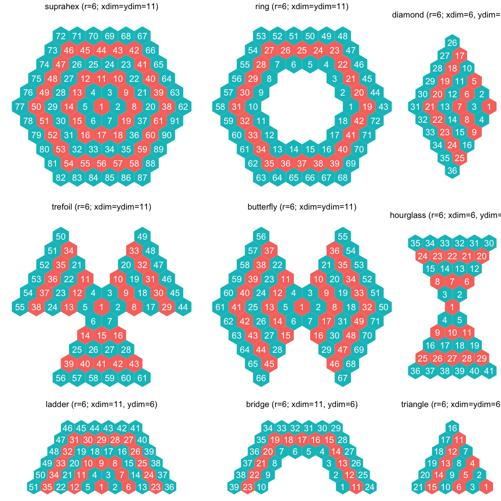

sHexGridVariant is supposed to define a variant of a
supra-hexagonal map grid. In essence, it is the subset of the
supra-hexagon.
sHexGridVariant(r = NULL, nHex = NULL, shape = c("suprahex", "triangle", "diamond",
"hourglass", "trefoil", "ladder", "butterfly", "ring", "bridge"))
an object of class "sHex", a list with following components:
r: the grid radius
nHex: the total number of hexagons in the grid. It may
differ from the input value; actually it is always no less than the
input one to ensure a supra-hexagonal grid exactly formed
centroid: the 2D coordinates of the grid centroid
stepCentroid: a vector with the length of nHex. It stores
how many steps a hexagon is awawy from the grid centroid ('1' for the
centroid itself). Starting with the centroid, it orders outward. Also,
for those hexagons of the same step, it orders from the rightmost in an
anti-clock wise
angleCentroid: a vector with the length of nHex. It stores
the angle a hexagon is in terms of the grid centroid ('0' for the
centroid itself). For those hexagons of the same step, it orders from
the rightmost in an anti-clock wise
coord: a matrix of nHex x 2 with each row specifying the
2D coordinates of a hexagon in the grid. The order of rows is the same
as 'centroid' above
call: the call that produced this result
none
# For "supraHex" shape itself sHex <- sHexGridVariant(r=6, shape="suprahex") library(ggplot2)Attaching package: ‘ggplot2’ The following object is masked from ‘package:crayon’: %+%#geom_polygon(color="black", fill=NA) # For "supraHex" shape itself sHex <- sHexGridVariant(r=6, shape="suprahex") df_polygon <- sHexPolygon(sHex) df_coord <- data.frame(sHex$coord, index=1:nrow(sHex$coord)) gp_suprahex <- ggplot(data=df_polygon, aes(x,y,group=index)) + geom_polygon(aes(fill=factor(stepCentroid%%2))) + coord_fixed(ratio=1) + theme_void() + theme(legend.position="none") + geom_text(data=df_coord, aes(x,y,label=index), color="white", size=3) + labs(title="suprahex (r=6; xdim=ydim=11)") + theme(plot.title=element_text(hjust=0.5,size=8)) # For "triangle" shape sHex <- sHexGridVariant(r=6, shape="triangle") df_polygon <- sHexPolygon(sHex) df_coord <- data.frame(sHex$coord, index=1:nrow(sHex$coord)) gp_triangle <- ggplot(data=df_polygon, aes(x,y,group=index)) + geom_polygon(aes(fill=factor(stepCentroid%%2))) + coord_fixed(ratio=1) + theme_void() + theme(legend.position="none") + geom_text(data=df_coord, aes(x,y,label=index), color="white", size=3) + labs(title="triangle (r=6; xdim=ydim=6)") + theme(plot.title=element_text(hjust=0.5,size=8)) # For "diamond" shape sHex <- sHexGridVariant(r=6, shape="diamond") df_polygon <- sHexPolygon(sHex) df_coord <- data.frame(sHex$coord, index=1:nrow(sHex$coord)) gp_diamond <- ggplot(data=df_polygon, aes(x,y,group=index)) + geom_polygon(aes(fill=factor(stepCentroid%%2))) + coord_fixed(ratio=1) + theme_void() + theme(legend.position="none") + geom_text(data=df_coord, aes(x,y,label=index), color="white", size=3) + labs(title="diamond (r=6; xdim=6, ydim=11)") + theme(plot.title=element_text(hjust=0.5,size=8)) # For "hourglass" shape sHex <- sHexGridVariant(r=6, shape="hourglass") df_polygon <- sHexPolygon(sHex) df_coord <- data.frame(sHex$coord, index=1:nrow(sHex$coord)) gp_hourglass <- ggplot(data=df_polygon, aes(x,y,group=index)) + geom_polygon(aes(fill=factor(stepCentroid%%2))) + coord_fixed(ratio=1) + theme_void() + theme(legend.position="none") + geom_text(data=df_coord, aes(x,y,label=index), color="white", size=3) + labs(title="hourglass (r=6; xdim=6, ydim=11)") + theme(plot.title=element_text(hjust=0.5,size=8)) # For "trefoil" shape sHex <- sHexGridVariant(r=6, shape="trefoil") df_polygon <- sHexPolygon(sHex) df_coord <- data.frame(sHex$coord, index=1:nrow(sHex$coord)) gp_trefoil <- ggplot(data=df_polygon, aes(x,y,group=index)) + geom_polygon(aes(fill=factor(stepCentroid%%2))) + coord_fixed(ratio=1) + theme_void() + theme(legend.position="none") + geom_text(data=df_coord, aes(x,y,label=index), color="white", size=3) + labs(title="trefoil (r=6; xdim=ydim=11)") + theme(plot.title=element_text(hjust=0.5,size=8)) # For "ladder" shape sHex <- sHexGridVariant(r=6, shape="ladder") df_polygon <- sHexPolygon(sHex) df_coord <- data.frame(sHex$coord, index=1:nrow(sHex$coord)) gp_ladder <- ggplot(data=df_polygon, aes(x,y,group=index)) + geom_polygon(aes(fill=factor(stepCentroid%%2))) + coord_fixed(ratio=1) + theme_void() + theme(legend.position="none") + geom_text(data=df_coord, aes(x,y,label=index), color="white", size=3) + labs(title="ladder (r=6; xdim=11, ydim=6)") + theme(plot.title=element_text(hjust=0.5,size=8)) # For "butterfly" shape sHex <- sHexGridVariant(r=6, shape="butterfly") df_polygon <- sHexPolygon(sHex) df_coord <- data.frame(sHex$coord, index=1:nrow(sHex$coord)) gp_butterfly <- ggplot(data=df_polygon, aes(x,y,group=index)) + geom_polygon(aes(fill=factor(stepCentroid%%2))) + coord_fixed(ratio=1) + theme_void() + theme(legend.position="none") + geom_text(data=df_coord, aes(x,y,label=index), color="white", size=3) + labs(title="butterfly (r=6; xdim=ydim=11)") + theme(plot.title=element_text(hjust=0.5,size=8)) # For "ring" shape sHex <- sHexGridVariant(r=6, shape="ring") df_polygon <- sHexPolygon(sHex) df_coord <- data.frame(sHex$coord, index=1:nrow(sHex$coord)) gp_ring <- ggplot(data=df_polygon, aes(x,y,group=index)) + geom_polygon(aes(fill=factor(stepCentroid%%2))) + coord_fixed(ratio=1) + theme_void() + theme(legend.position="none") + geom_text(data=df_coord, aes(x,y,label=index), color="white", size=3) + labs(title="ring (r=6; xdim=ydim=11)") + theme(plot.title=element_text(hjust=0.5,size=8)) # For "bridge" shape sHex <- sHexGridVariant(r=6, shape="bridge") df_polygon <- sHexPolygon(sHex) df_coord <- data.frame(sHex$coord, index=1:nrow(sHex$coord)) gp_bridge <- ggplot(data=df_polygon, aes(x,y,group=index)) + geom_polygon(aes(fill=factor(stepCentroid%%2))) + coord_fixed(ratio=1) + theme_void() + theme(legend.position="none") + geom_text(data=df_coord, aes(x,y,label=index), color="white", size=3) + labs(title="bridge (r=6; xdim=11, ydim=6)") + theme(plot.title=element_text(hjust=0.5,size=8)) # combined visuals library(gridExtra) grid.arrange(grobs=list(gp_suprahex, gp_ring, gp_diamond, gp_trefoil, gp_butterfly, gp_hourglass, gp_ladder, gp_bridge, gp_triangle), layout_matrix=rbind(c(1,1,2,2,3),c(1,1,2,2,3),c(4,4,5,5,6),c(4,4,5,5,6),c(7,7,8,8,9)), nrow=5, ncol=5)
){kind=link}